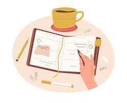
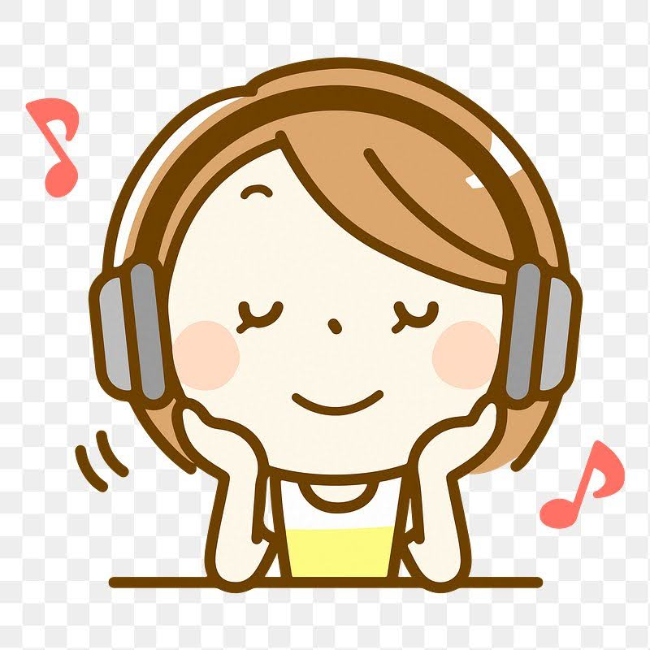
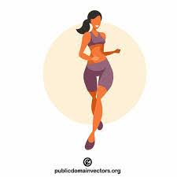
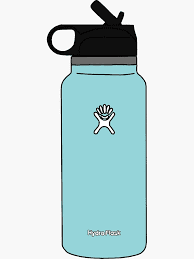
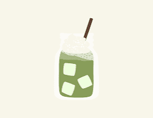
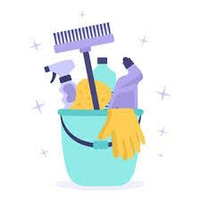

Personal Self-Care Plan
What does self-care mean to me?
Self-care to me is keeping a calm, clutter-free, organized mind. It is taking care of my whole self, including my physical and mental health. It is being mindful of meeting deadlines and doing the necessary planning to make that happen. It is also making time for things that don’t have formal deadlines but that are important to keep myself feeling well. One of the most important things to me about self-care is giving myself grace. While self-care routines are good and build discipline, I value listening to body and mind which involves checking in with myself everyday.

During practicum, I will take care of myself by:
- Continuing to do my hobbies including listening to music and podcasts, watching TV
- Checking in with myself and remembering the heart behind what I’m doing
- Asking my mentor teachers questions and having lessons and materials ready ahead of time

Strategies to maintain my physical and mental health:
- Drink 2 water bottles during the school day - fill it up during lunch
- Exercising (at-home workout videos or boxing class) a few times per week
- Getting outside ie. going on a walk
- Writing in my journal once a week to reflect


Things that fill my bucket:
- Spending time with loved ones
- A clean and organized space at home
- Keeping up with podcasts that I like to listen to for fun
- Making an iced matcha drink
- Changing up my environment (going to the mall, hanging out with friends, etc.)


My weekly goals are:
- Be on top of planning. Spend a few hours on Saturday to have an overall plan for the week’s lesson
- Write in my journal on Sunday or mid-week (Wednesday)
- Getting 7-8h of sleep per night